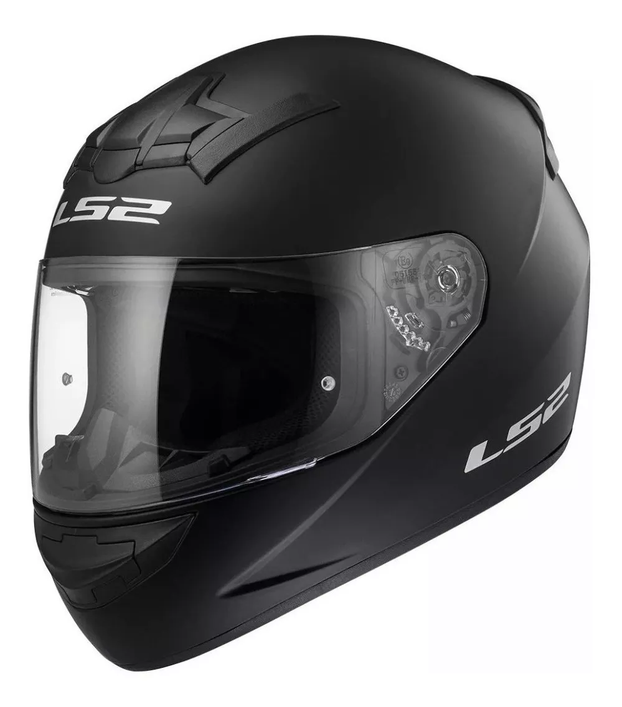
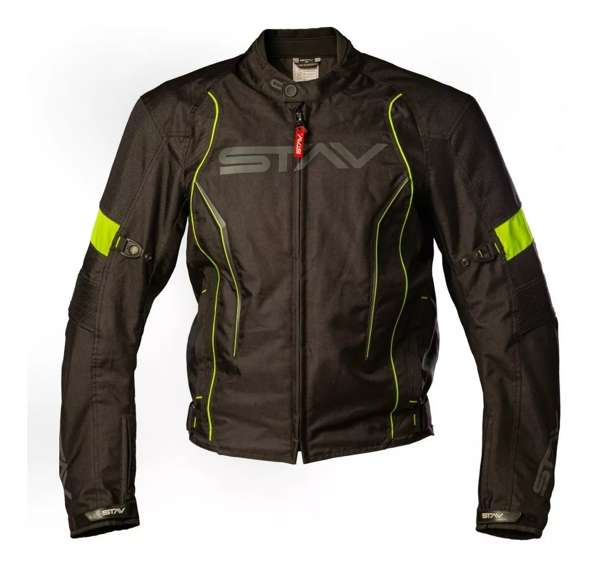

Algunos de nuestros articulos:
LS2 Rookie FF352
Te contamos algunas cualidades del casco que puede que no conozcas: Dispersa la fuerza del impacto sobre una superficie más grande, con lo cual hace que no se concentre en áreas particulares de la cabeza. Previene el contacto directo entre el cráneo y el objeto que hace impacto, al actuar como una barrera mecánica entre la cabeza y el objeto. El material mullido incorporado en el casco absorbe parte del impacto, y en consecuencia, la cabeza se detiene con más lentitud. Esto hace que el cerebro no choque contra el cráneo con tanta fuerza.
Guantes Motocross Fox Racing - Dirtpaw Ce

Los guantes son un elemento de protección muy importante para los motociclistas, ya que se encargan de proteger las manos de lesiones en caso de accidente y de las condiciones climatológicas que sufren mientras pilotan, como el viento o la lluvia.
Campera Moto Stav Base Protection Abrassion Control Motoscba
Cuando se circula en moto, el cuerpo del motorista está expuesto tanto ante los fenómenos meteorológicos como ante los accidentes o caídas que puedan ocasionarse. La ropa de moto debe estar confeccionada en de cuero o materiales protectores y aislantes, además de resistentes. Lo aconsejable es que cuente con protecciones extras en codos, hombros y espalda.